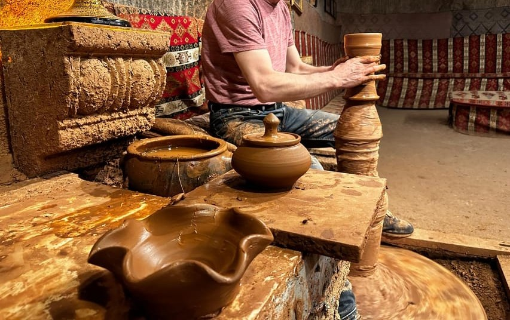

Çömlekçilik

Çömlekçiliğin Kapadokya''daki geçmişi, Hititler''e kadar uzanmaktadır. Anadolu''da çömlek yapımı Neolitik devirde (İ.Ö. 7000''li yıllar) Çatalhöyük''te başlamış, İ.Ö. 2000''lerde Mezopotamya''dan ticaret için gelen Asurlular Hititler''e çömlek yapımını öğretmişlerdir. Bu el sanatı bölgede yaşayan medeniyetler tarafından bugünlere kadar sürdürülmüştür. Kapadokya''nın toprak kaplarıyla (çömlek) ünlü yöresi Avanos''tur. Volkanik bir arazi üzerine kurulu olan ilçe, bir yandan Kızılırmak''m getirdiği nitelikli çamur, öte yandan yakın çevredeki elverişli kil yatakları dolayısıyla yoğun bir seramik üretimi için uygundur. Çeşitli işlemlerden geçilerek üstün nitelikli bir seramik hamuru haline getirilen yağlı kırmızı toprak basit görünüşlü atölyelerde şekil kazanır.
Yerli halkın "işlik" veya "çanakhane" adını verdiği atölyeler, güneş almayan gösterişsiz mekânlardır. Zemini toprak olan bu atölyelerde bir ila dört arasında tezgah bulunur. Kapıya yakın, ışık alan bir duvar kenarına kurulan tezgâha bölgede "çıkrık" adı verilir. Çamur teknelerinde suyla karıştırılarak bekletilen çamur bir süre sonra kıvamını bulur, elde edildiği yatağın türüne göre silisli, gevşek, yumuşak veya yağlı, sert ya da milli özellikler gösteren çamur türlerine göre üretilecek kap türü de seçilir. Malzemenin zenginliği, çömlek ustasına farklı büyüklükte seramikler hazırlama imkânı tanır. Ayakla çevrilerek hareket verilen çark üzerindeki çamur topağı dönmeye başladığında, birkaç dakika içinde incelip yükselmeye başlayan kütle sonunda inanılmaz bir şekil kazanır. Çarkta çekilen formlar ustaca yerinden kaldırılıp "yanalak" adı verilen havadar bir tezgâh üzerinde kurumaya bırakılır. Bu sırada boyama ve cila işlemleri gören kaplar yeterince kuruduktan sonra fırınlara istiflenir. 600-700 °C civarında bir ısıda pişirilen kaplar sertleşerek istenen özelliğe kavuşturulur.
Formlar ve boyutlar ihtiyaca ve çamur türüne göre şekillenir. Geleneksel üretim, boyları 20 cm''den 1.5 m''ye kadar değişen, çömlek, küp, testi ve güveçlerden oluşan işlevsel gereçler üretimidir. Son yıllarda Hitit ve Frig seramikleri başta olmak üzere, Anadolu''nun en eski formlarını tekrarlayan hediyelik eşya üretimi başlamıştır.